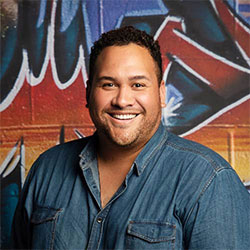
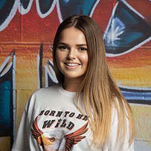
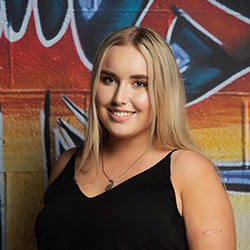
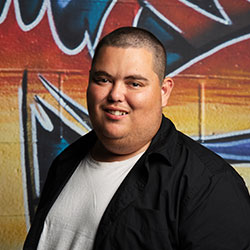
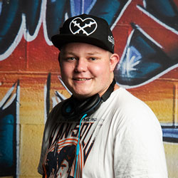
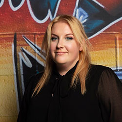

Presenters



Jamie
His name is Jamie, but you can call him Jay
Born in New Zealand but raised in Australia our boy Jay is an infectious person whose laughter can often be heard well before you see him.
Built like an All Black flanker you would expect jay to be a big burly rough man, only to be surprised by his creative, sensitive and naturally comedic mind.
Facebook famous to his nanna and a mummy’s boy at heart, this beer pouring, coffee making fellow offers hilarious anecdotes, skits and insanely good hugs.
Tune in and listen to his with his inviting voice and most of all his laughter
Catch him on Boom Radio with
the Jay Way show every Wednesday from 7 – 10pm
Big Boom Party every Saturday night from 7 – 10pm,
Monday – Tuesday from 7 – 10am with The Breakky show with Cin, J & Bron.
Share Follow


Mary
So, who’s Mary?
Mary was born thanks to a bet her dad made with her mum, that dockers would win the derby against eagles over 18 years ago, but ironically supports the eagles, typical aries. She pulled a Benjamin Button, as she’s the youngest of 3 but is an old soul and the most mature. Marys sarcastic 24/7 365. She’s the girl that everyone looks like, even if you don’t, you do. Brown hair and brown eyes and you’re her doppelganger.
After quitting cheerleading to get a Mcflurry and mixed basketball because she realized she was too short to slam dunk, Mary’s achievements are limited to one trophy. “Capsize Queen”, from her sailing days, which she also gave up because it was “too windy”. She’s most proud of the 2879 Nandos points she’s managed to rack up, and since 1 point = $1, you can decide whether that’s impressive or not. Her talents include smelling a crisp bowl and being able to tell you what flavour it is and pretending to know everything about all sports to impress boys.
Mary’s love of music stretches from Louis Armstrong’s “La Vie En Rose”, all the way to Cardi B’s “Bodak Yellow”, and everything in between. With her passion for music she thought why not pursue a career in it, and after being traumatised from singing I Am Beautiful by Christiana Aguilera in front of her whole school, she knew being the next Beyonce wasn’t an option, so doing a Diploma of Radio and Media Broadcasting at North Metropolitan Tafe was the next best thing.
Mary is constantly waiting for the One Direction hiatus to be over, but in the meantime she’s on Boom Radio!
Catch her on Boom Radio with
Wednesday – Thursday drive from 4 – 7pm
Hype with Loz every Tuesday night 7 – 10pm as they count down the top 20.
Share Follow


Lauren
But who is Lauren?
Lauren born and bred in Perth, this confident, loud, woman who doesn’t know how to be quiet in serious situations is a passionate radio presenter. Sport isn’t so much her thing with the only thing she can keep in shape are her eyebrows. When it comes to running, the closest to that she has gotten to is the running man challenge, this challenge video of Lauren was actually posted online and copped a whopping 4 million views, something she claims yet regrets every day. She creates many videos online with over 35,000 followers on Instagram posting somewhat funny content, no one can really explain what it is but some how her dancing in her room is actually funny to teenage girls.
Lauren’s passion for music varies from Crying in the Shower listening to Fix You by cold play to twerking to Work by Rihanna.
Previously to becoming a Diploma Student of Radio she has worked at an Indoor Children’s Playground for 4 years, the job involved children throwing things at her, cleaning waste, seeing a lot of crying children when they were eliminated in Musical Bobs and eating the left over ice-cream cake from parties when no one was looking.
Tune in and listen to his with his inviting voice and most of all his laughter
Catch her on Boom Radio from
Mon -10am-1pm
Wednesday – Thursday with Jordy and Loz from 7 – 10am
The Hype with Loz and Mez giving you the top 20 countdown every Tuesday from 7-10pm!
Share Follow

Sam
Who is Sam?
Sam is a 22 year old from Geraldton WA, who has been in the city for four years studying and working. He now lives in Nedlands with his four male housemates and tries to live the Golden Triangle lifestyle on a uni student budget.
He is studying a diploma in radio and broadcasting because as his friends say, he has a face for radio and could talk for a living. Being the oldest of five siblings, he had to fight hard to get a word in, which is why he is never short of things to say. His love for radio started when he was little and used to commentate family kick to kick in the backyard, and his dream is to one day call the AFL or NBA for a living. Sam is ALWAYS talking sports (when he isn’t playing it), and has so many NBA and AFL stats in his brain that he forgets everything else in his day to day life like when he lost his car keys for six weeks and they were in the ignition the whole time. His Spotify playlists range from Kanye and Kendrick (who he’s seen in concert), to Morgan Saint and Last Dinosaurs, to Robbie Williams and Pink (which you can accredit to his mum and the 5 hour car trips to Perth when he was young).
You’ll always see Sam coming due to his repertoire of colourful and TV-themed T-Shirts, and you’ll hear him coming with his obscure Simpsons references and bad dad jokes. Sam has the attention span of a small puppy and can’t go a whole movie without adding his own commentary, but will eat ANYTHING insight so dinner dates are a safe bet.
Tune in and listen to his with his inviting voice and most of all his laughter
You can hear Sam on BOOM Radio with The Warm Up sports program from 7pm on Thursday
with his co-host Mez on Wednesday and Thursday afternoons
with The Warm Up sports program from 7pm on Thursday
Share Follow


Jordy
Let's talk about Jordy
Jordyn, Jordy, or even Jordo is a stubborn Tauras, and that`s all you need to know. As if one Jordyn wasn`t enough, she`s a twin, although non-identical she is the older one and she never lets her twin sister forget it. She`s just turned 20 and didn`t fail to let everyone know about her midlife crisis. listening to a whopping 32,235 minutes of music last year, or rather 32,235 minutes of Dua Lipa.
In order to be different Jordyn goes out of her way to find unknown or non-mainstream artists (with the exception of Dua Lipa and Kendrick Lamar), but bought a Kylie Jenner lip kit two years ago to stay trendy and mainstream and still uses it because it cost $50. Talents include shopping on a budget and losing at beer pong.
She really likes the idea of taking care of the environment but not her liver. Jordyn`s recommended movies on Netflix consist of Shrek, Brooklyn 99 and any Seth Rogan movie.
This jokester loves a debate and will argue that tomato sauce belongs in the fridge. Our social media loving, animal activist never fails to wear a different jacket every day, even in the summer heat she always seems to be cold but will turn up the heat in the studio slam dunking hot tracks
Listen to her
Booms Backyard – 7-10 pm
Booms Big brekky – Wed & Thurs – 7-10 am
Fri – 1-4 pm
Sun – 10pm – 12am
Share Follow


Matty
So, who’s Matty?
Matty is quiet, but loud when it comes to sport. He’s a die-hard Collingwood supporter who remarkably still has all his teeth. You’ll find Matty on the weekend playing as much footy and cricket as possible, trying to be a contender but more of a pretender. Matty’s 21 but never been to Las Vegas.
He knows Beckenham like the back of his hand, as it’s where he’s lived for 21 years. In his spare time he likes hanging out with mates, and listening to his future wife, Taylor Swift. Matty doesn’t drink alcohol but instead enjoys a nice, long, cold diet coke on the rocks. He’s also a Gold Star Ballroom Dancer, but if he’s not doing the ChaCha on the Dance floor he’ll be doing Fox Trot and Rumba all over the Radio Panel.
When Matty’s not hitting 4’s and 6’s on the cricket field, he;s sledging the dirty opposition batsman. Matty’s been painstakingly waiting for Taylor Swift to fall in love with him, he eases the pain by watching Shane Warne masterclass videos, before cheating in cricket was cool. So if you haven’t tuned in yet you’ll be sure to do it now.
Let him take you on a magical journey through all the action of Sport, Music and interviews with only quality guests, Every Friday morning from 9am!
Listen to him –
Drive Mon&Tues 4-7pm
Wed 10am-1pm
The Warm Up Thurs – 7-10 pm
Sun – 7-10pm
Share Follow

Callan
Who’s Callan?
Callan was Born in Kununurra but grew up in Perth and although he currently works at Maccas he aspires to become a great radio presenter even though currently he`s a better gamer then he is an announcer.
Callan has a bit of a weird and different personality (good weird not bad weird) because when he’s on air if he is not careful then he could very easily start to ramble on about something completely different to the subject and it will always be about something that will either be game related or about something that doesn’t exist and is completely made up. And one of the weirdest things about him is that every now and again out of nowhere he will do some random impression of a character or person and although some are good, there are a few that are so bad that you can’t help but laugh.
However, behind the scenes, he can almost always be seen holding some kind of game controller and even if he isn’t you can be sure that there is one on his person. It is because of this that his knowledge of games and gaming culture is ridiculously large so don’t start talking about games with him because he will never stop.
Listen to him on Boom at –
Booms Geekout – Wed 10pm – 12 am
Sat – 1 – 4 pm
Sun 7-10 am
Share Follow

Cindy
You can call her Cin
Now this is a story all about how my life got flipped turned upside down And I like to take a minute just sit right here… Cos its all about Cin B… HAHAHA just kidding Cin B is just plain old down to earth happy go lucky type of gal! Grew up in the bogan town of Rocko successfully drag raced down the local Motorplex….. EPIC!
Cin loves to get out and party when she can but loves to chill & relax with her loved ones. When you hear BASS DROP, Cin will be on the dance floor moving her groove thang, music is in her blood.
Cin`s spare time consists of Wakeboarding (might I say a total beginner) Mixing Tunez and hanging with her mates. Her favorite all-time movie is Step Brothers, SO MUCH ROOM FOR ACTIVITIES! Speaking of activities, she also likes to hang out at her local R.S.L club especially on ANZAC Day to pay respect and be the amazing Bar Trooper she is. Whats your flavor, tell me what`s your flavor WOooo!!! Hip Hop, R&B is her flavor of music but truly loves all types of music genre. Fav artist cant beat Old School Hip Hop esp. Tupac &Notorious BIG. Cin at the end of the day will have your back in a Chilli eating contest, 80s style dances off and killing it at a Sing Star contest.
Catch her on Boom-
Boom`s Big Brekky Mon – Tues 7-10 am
Sunday Sessions – Sun 10 am – 1 pm
Share Follow
Pete
Born in the rolling green highlands of Scotland in early1994. Peter already knew from a wee laddie that he was destined to make people laugh for a living simply because that’s all he is good at.
Whether you’re laughing at him or with him, as long as your laughing, it gives him a sense of accomplishment. At the young age of 11, Peter along with his older sister and parents decided to immigrate to Perth Western Australia in the tail end of 2005.
He Fully embraces the Aussie way of life, minus the double plugger thongs and Bintang singlet. He likes to keep his Scottish roots strong by tossing the caber and occasionally going on a hunt for some wild haggis. in his downtime peter can be found working on his other passions that include gaming, writing jokes, tuning into his ever-expanding vinyl collection or watching professional wrestlers put the smackdown in the squared circle. There’s not much music peter won’t listen to…. (yes even bagpipes) His top three genres are metal, rap and whatever sounds good to his ears.
The best 3 describing words to summarise Peter is big, brash and bombastic. Leave your big brain at the door as you won’t need it, just relax and enjoy the ride that big Pete the flying Scotsman will take you on.
Listen to him –
Drive – Mon&Tues 4-7 pm
Full Metal Jacket Mon – 10pm-12am
Sat – 10am-1pm
Share Follow